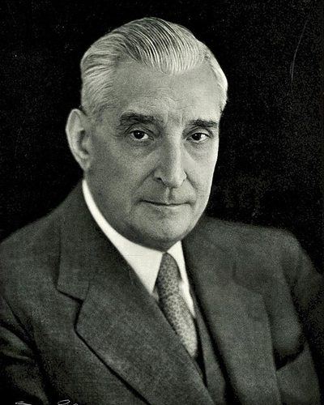

Ideologies / Third Position
What is Estado Novo Corporatism (Salazarism)?
Estado Novo Corporatism (Salazarism) is a political ideology in the Third Position family. In these speeches Salazar sets out an authoritarian state that rejects parliamentary parties and class struggle and also rejects the totalitarian claim that the state stands above morality and law. The nation is to be organised through the family, the parish, the municipality and corporations of employers and workers. He places sound public finance, order, Catholic values and the unity of Portugal with its overseas empire ahead of rapid change or mass mobilisation.
A strong state without parties, bounded by Catholic morals.
Defined from: António de Oliveira Salazar, Doctrine and Action: Internal and Foreign Policy of the New Portugal, 1928 to 1939 (1939)
See how close you are to Estado Novo Corporatism (Salazarism) Dare a friend to answer as one

_%E2%80%93_Lisboa.jpg){kind=link}
Where Estado Novo Corporatism (Salazarism) stands on 13 axes
Each axis runs from 0 to 100. A score of 50 is the middle. On a classic compass it sits in the Authoritarian Right quadrant.
| Axis | Position | Score | In words |
|---|---|---|---|
| EconomyMarket to Planned | 55 | Balanced | |
| OwnershipPrivate to Collective | 25 | Strongly Private | |
| RightsLiberty to Security | 85 | Very strongly Security | |
| GovernmentDemocracy to Autocracy | 90 | Very strongly Autocracy | |
| StructureDecentralised to Centralised | 80 | Strongly Centralised | |
| NationInternationalist to Nationalist | 80 | Strongly Nationalist | |
| ImmigrationMulticulturalist to Assimilationist | 80 | Strongly Assimilationist | |
| ValuesProgressive to Traditional | 95 | Very strongly Traditional | |
| TechnologyAccelerationist to Precautionary | 70 | Strongly Precautionary | |
| EnvironmentIndustrialist to Environmentalist | 40 | Leans Industrialist | |
| ReligionSecular to Religious | 85 | Very strongly Religious | |
| MilitaryPacifist to Militarist | 50 | Balanced | |
| TradeFree Trade to Protectionist | 80 | Strongly Protectionist |
Ideologies closest to Estado Novo Corporatism (Salazarism)
- Austrofascism89% alike
- Rexism89% alike
- Brazilian Integralism86% alike
- Reactionary Monarchism84% alike
- Khomeinism82% alike
Its opposite on this map is Anarcha Feminism, at 19%.
Parties near Estado Novo Corporatism (Salazarism)
- Law and JusticePoland. Polski model państwa dobrobytu (2019)76% alike
- ChegaPortugal. Salvar Portugal (2025)74% alike
- Tory PartyUnited Kingdom. The Tamworth Manifesto (1834)74% alike
- VoxSpain. Un programa para lo que importa (2023)74% alike
Common questions
What is Estado Novo Corporatism (Salazarism)?
Estado Novo Corporatism (Salazarism) is a political ideology in the Third Position family. In these speeches Salazar sets out an authoritarian state that rejects parliamentary parties and class struggle and also rejects the totalitarian claim that the state stands above morality and law. The nation is to be organised through the family, the parish, the municipality and corporations of employers and workers. He places sound public finance, order, Catholic values and the unity of Portugal with its overseas empire ahead of rapid change or mass mobilisation.
What does Estado Novo Corporatism (Salazarism) believe?
In one line: A strong state without parties, bounded by Catholic morals. Its strongest positions are Traditional, Autocracy, Security. In these speeches Salazar sets out an authoritarian state that rejects parliamentary parties and class struggle and also rejects the totalitarian claim that the state stands above morality and law. The nation is to be organised through the family, the parish, the municipality and corporations of employers and workers. He places sound public finance, order, Catholic values and the unity of Portugal with its overseas empire ahead of rapid change or mass mobilisation.
Who founded Estado Novo Corporatism (Salazarism)?
Estado Novo Corporatism (Salazarism) is defined here from Doctrine and Action: Internal and Foreign Policy of the New Portugal, 1928 to 1939 (1939) by António de Oliveira Salazar. The thinker most tied to it is António de Oliveira Salazar (1889 to 1970).
Is Estado Novo Corporatism (Salazarism) left wing or right wing?
On a classic two axis compass Estado Novo Corporatism (Salazarism) falls in the Authoritarian Right quadrant, which means the economic centre and the authoritarian side. Left and right hide a lot, though, which is why EthosScales scores it on thirteen separate axes.
How is Estado Novo Corporatism (Salazarism) different from Austrofascism?
They are close: 89% alike. The biggest gaps are on Structure, where Estado Novo Corporatism (Salazarism) scores 80 and Austrofascism scores 60, and Religion, where Estado Novo Corporatism (Salazarism) scores 85 and Austrofascism scores 100. On each axis, 0 is one end and 100 is the other.
Think this is wrong? Suggest a correction. The scores are editorial estimates.